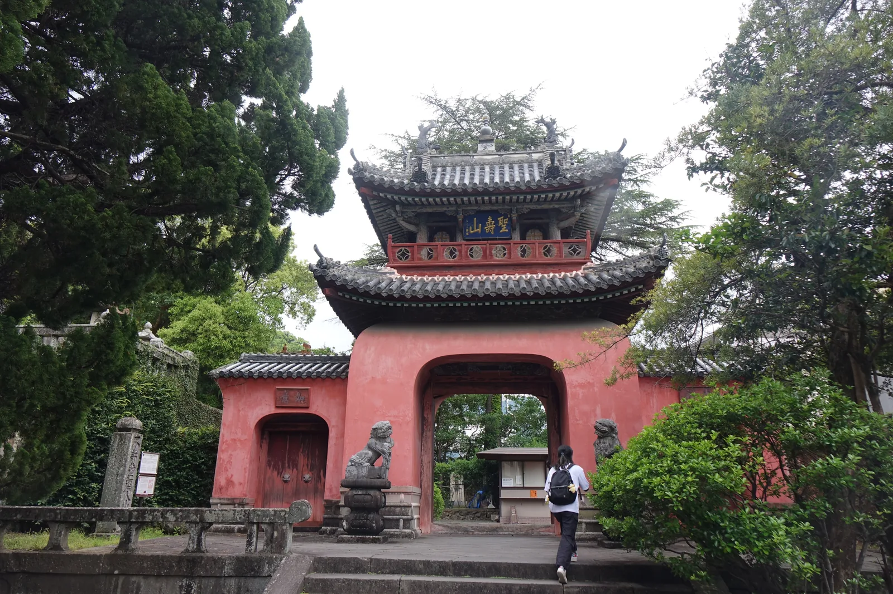
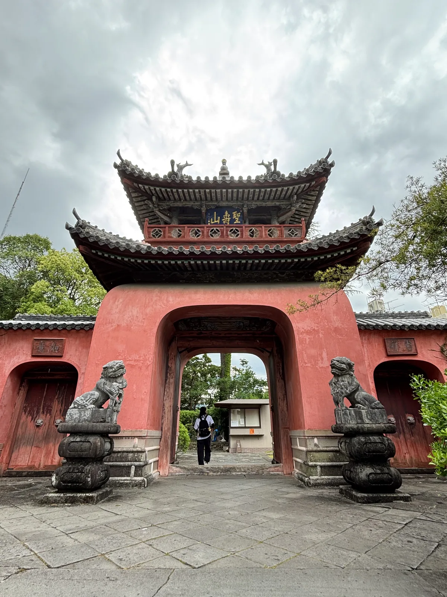
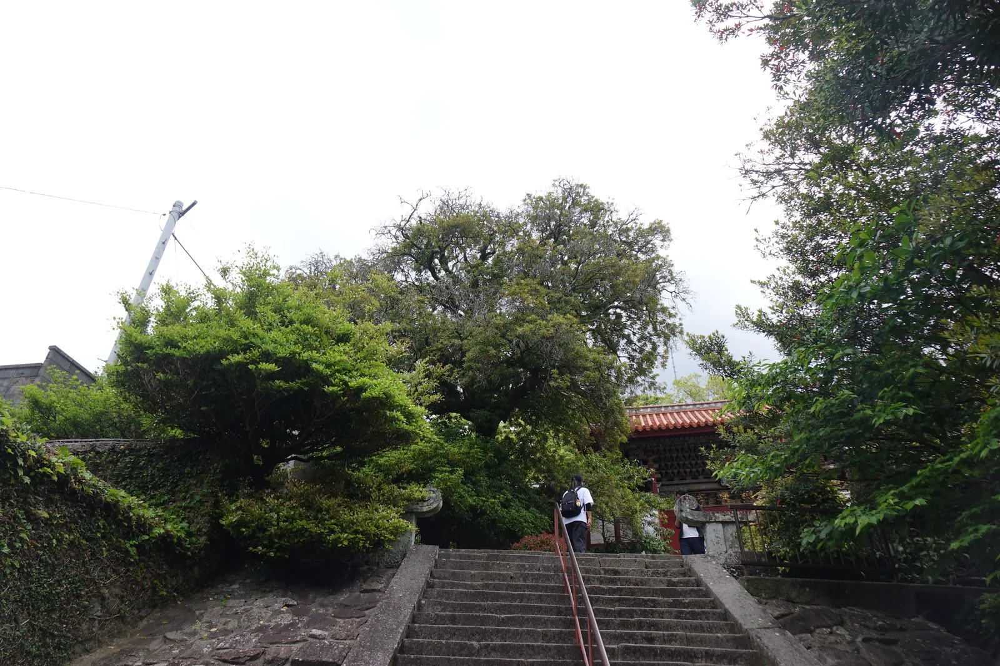
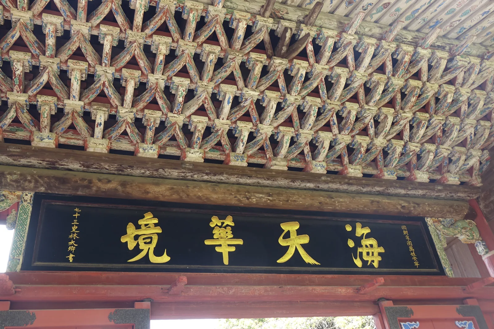
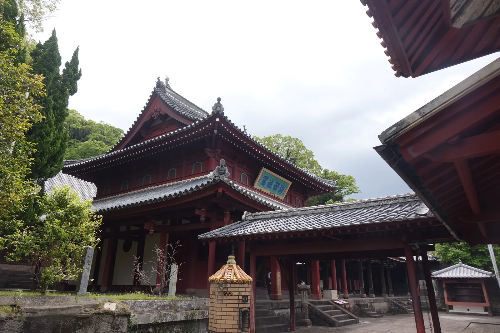
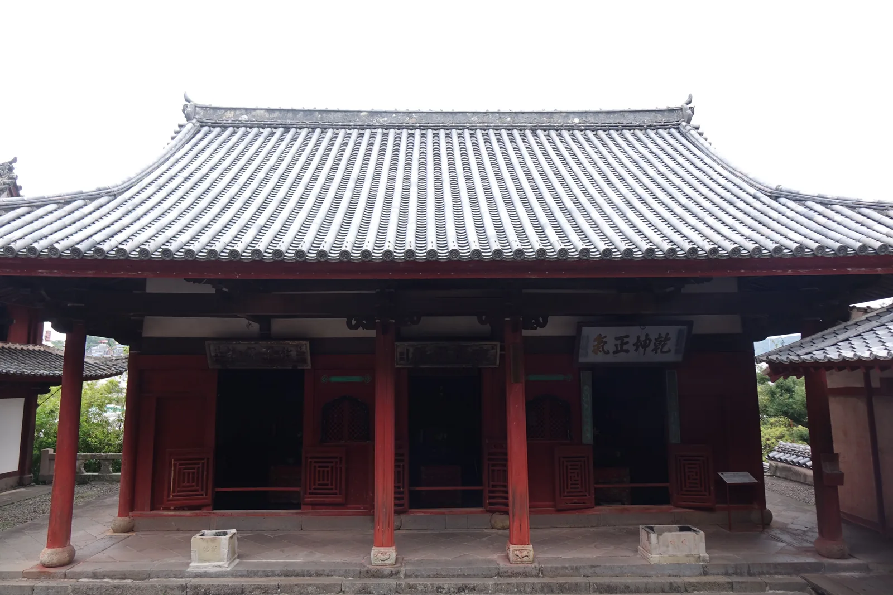
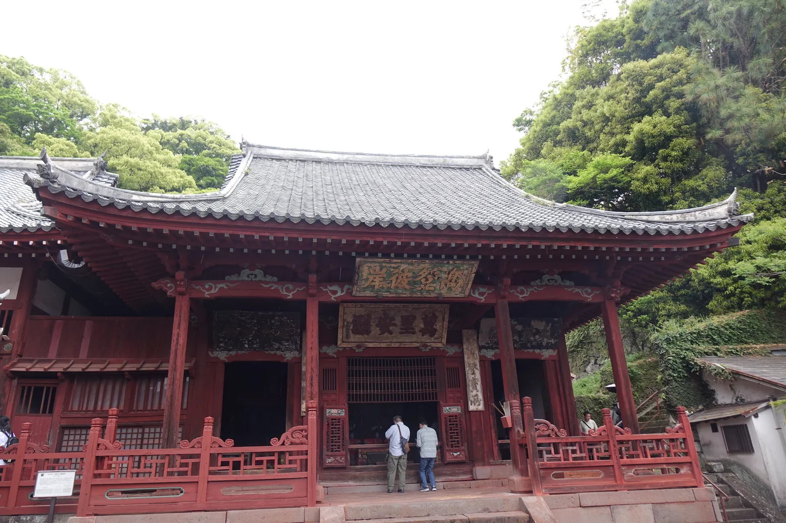
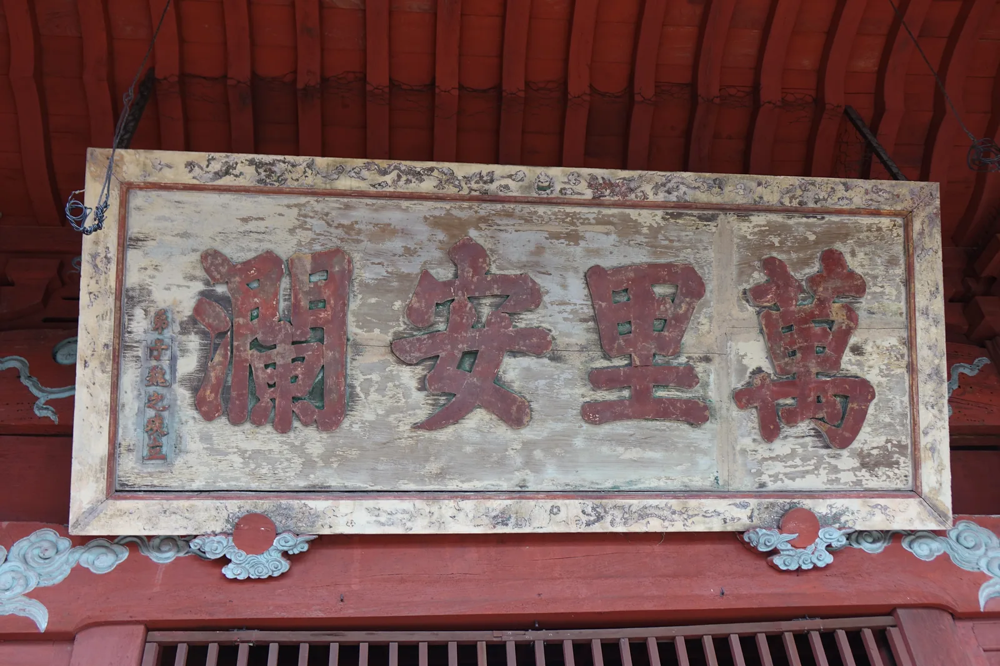
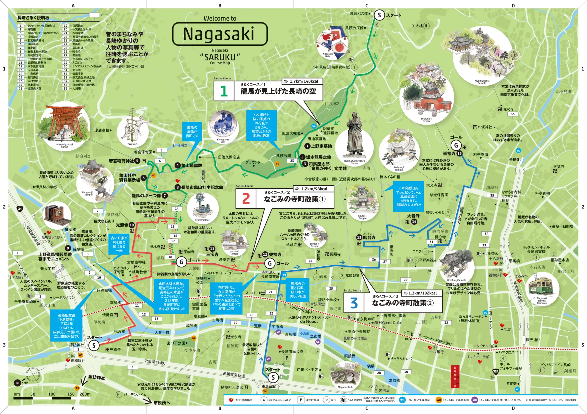
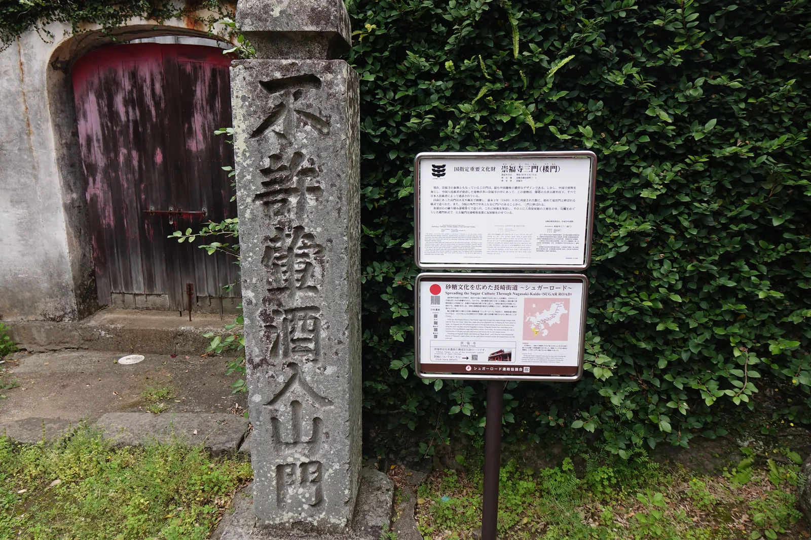

卍 神社寺廟散策 · 長崎縣・長崎市鍛冶屋町 · 2025-05
崇福寺
聖寿山崇福寺しょうじゅさんそうふくじ
- 祭神
- 釋迦如來（大雄）／媽祖（天后聖母）／關帝・韋馱天
- 宗派
- 黃檗宗
- 社格
- 國寶二棟（大雄寶殿・第一峰門）｜國指定重要文化財四棟
五月一日早上十點二十五分，長崎的路面電車開到底，終點站的名字就叫崇福寺。 從電停（路面電車的停靠站）出來走幾十公尺，鍛冶屋町的巷子盡頭立著一段石階， 石階頂上橫著一座朱紅色的門：下半是石頭砌起來、外面抹灰的方形基座， 上半是一層入母屋屋頂的樓，四個角往上翹，中間開三個洞。
那天陰天，門的紅在灰色的天底下顯得很沉。我在寺裡只待了十分鐘。
十分鐘不夠看完這裡的任何一棟建築，但足夠發現一件事： 這座寺裡最像中國的那道門，是日本人蓋的。

渡海而來之認定
寬永六年（1629），住在長崎的福州出身唐人，把渡海而來的唐僧超然請了下來， 建了這座寺。山號聖壽山，屬黃檗宗，因為出資與請僧的都是福州人， 所以長崎人又叫它「福州寺」。長崎的唐寺按出身地各建各的，這是福州那一座。
本堂叫大雄寶殿，「大雄」是釋迦的別稱。長崎市文化財課的解說寫得很清楚： 這棟建築由大檀越（出大錢的施主）何高材寄進，在中國把木料切好組過一次， 再由唐船運到長崎，正保三年（1646）上梁建立。
石階上面那道第一峰門更徹底。它的材料是在中國寧波切組的， 元祿八年（1695）分裝在好幾艘唐船上運過來，到長崎才重新立起來。 一棟建築被拆成貨物、分散在數條船上渡海——這是它的建造方式，不是比喻。
這兩棟在昭和二十八年（1953）三月三十一日一起被指定為國寶。 崇福寺因此不是「在日本蓋的中國風建築」， 而是「在中國做好、渡海運來、在長崎組起來的中國建築」。 文化財課還記了一筆：大雄寶殿上層的意匠，與福濟寺的大雄寶殿類似—— 而福濟寺那一棟，在原爆中燒掉了。
然後是那道三門。它是嘉永二年（1849）四月上梁的， 全寺建立年代最晚的一棟，而且棟梁大串五郎平以下全是日本工匠。 文化財課的措辭是：寺內多為中國切組、中國工匠所建，而最具中國趣味的偏偏是這一棟。
以前的山門毀於火災與風災，重建時第一次採用了這個樣式，稱為龍宮門。 寺院的外門若中央與左右都有門戶，就叫三門。 所以今天長崎人心中「崇福寺的樣子」，是一群日本工匠在幕末想像出來的中國。

立地非屬偶然
崇福寺在鍛冶屋町，風頭山的西麓，標高約三十公尺。 長崎的平地全給了港與町，寺院一律排在山腳那一條線上，那條線就叫寺町， 崇福寺在它的南端——也是長崎路面電車的南端終點。
坡地決定了這座寺長什麼樣。護法堂那一棟最清楚： 在黃檗宗的寺院裡，大雄寶殿前面本來應該擺一座天王殿， 彌勒（布袋）與韋馱天背對背，左右可以穿過去，它是殿也是門。 長崎的福濟寺、聖福寺，以及宇治的本山黃檗山萬福寺，都有這樣一座天王殿； 文化財課直接把它列為黃檗寺院的特徵之一。
崇福寺這一棟的柱子排法確實接近天王殿，但背面砌成了牆， 變成一座普通的佛殿。文化財課給的理由只有一句：因為地形的關係，做不成門。 宗派的標準配置，在這塊坡地上被地形改寫了一次。
寺的正面也被地形推過一次。第一峰門原本才是山門， 延寶元年（1673）在它下方偏西的位置新建了三門，第一峰門就降級成二之門。 寺的臉往街道的方向挪了一段，中間隔的正是那段石階。

伽藍配置及其空間效果
石階頂上是第一峰門。它的看點全在軒下：一種叫四手先三葉栱（四層出跳、三葉形的栱） 的斗栱密密排滿整個簷下，這種做法叫詰組（斗栱不只放在柱頭、而是連續排滿）。 文化財課的說法是——別處沒有例子，連華南也少見。
其他細節也一併是中國式的：兩層扇垂木（呈放射狀的椽）、鼻隱板（遮住椽頭的橫板）、 插肘木（插進柱身的斗栱臂）、柱子上部纏的籐卷。 簷下與簷裡施極彩色的吉祥紋樣，會淋到雨的部分則一律塗朱丹。
門上兩塊扁額給了它兩個名字。「第一峰」是門名，另一塊寫「海天華境」—— 文化財課特地註明，第一峰與海天這兩個別名都是從扁額的字來的。 一棟建築被它自己掛的字命名，這件事本身就很中國。

大雄寶殿是這裡最複雜的一棟，因為它被改過。 正保三年上梁時是單層屋頂，三十五、六年後（延寶到天和那段）在外觀上加了一層， 才變成現在看到的重層。所以它的上下兩層不是同一批人、同一個時代的東西。
下層是中國的：簷口的逆凝寶珠束持送（倒懸的寶珠形短柱托座）、 前廊那道俗稱黃檗天井的拱形天花。上層的細部則以和樣為基調。 文化財課用了「違和感なく調和している」——沒有違和地調和著。
我站在院子裡拍到的是它的側前方：下層的灰瓦、上層的朱塗與綠色描邊的拱形飾， 中間掛一塊藍字綠底的扁額，寫「海西法窟」。海的西邊。 建這座寺的人，是從海的西邊來的； 而這棟建築的木料，也是從海的西邊切好、裝船、渡過同一片海運來的。

護法堂就在旁邊，堂裡祀韋馱天，也叫關帝堂或觀音堂。 它的建造年代不是從文獻查來的，是從大梁下面的墨書讀出來的：享保十六年（1731）。 正面完全敞開，四根朱塗圓柱立在石礎上，扁額寫「乾坤正氣」——那是關帝的字。 柱礎石上的雕刻紋樣被認為出自中國工匠，而妻飾（山牆面的裝飾）是和樣。
有意思的是屋瓦。護法堂的軒丸瓦是三巴紋，一路數過去全是三巴； 而媽祖堂的軒丸瓦，每一枚都刻著一個「福」字。 同一座寺，兩棟建築，屋簷上寫的是兩種不同的祈願。

鐘鼓樓在另一側，享保十三年（1728）建，重層， 上層吊梵鐘、放太鼓，所以開了很多丸窗與火燈窗——那些洞是為了讓聲音散出去。 大梁上有木匠頭荒木治右衛門的墨書，妻的懸魚與破風混了和風的做法。
鐘鼓樓現在的位置也不是原來的位置。文化財課記著： 創建時的鐘鼓樓是一座八角（或六角）圓堂形的重層建物，立在書院前庭的南隅。 這座寺裡幾乎每一棟都被搬過、改過或降級過一次。
這一圈走下來，空間的效果其實很單純： 街面一道樓門，一段石階，上面一個院子，院子四周圍著一圈中國。 那段石階不長，但鍛冶屋町的聲音是在那裡被切掉的。
千呆的托鉢
延寶九年（1681）正月，長崎鬧大饑饉。福濟寺先開始施粥， 崇福寺因為寺內正在施工，做不了。工程結束以後，九月十五日起， 第二代住持千呆自己走到町上托鉢，把粥施了起來。
那年十月改元天和。天和二年（1682）四月十四日， 一口大釜從鍛冶屋町用車載上山，架在本堂前的灶上。 口徑六尺五寸、深六尺，釜錢一貫三百目，推定出自鑄物師阿山家二代安山彌兵衛之手。
釜的外圈鑄著一行銘文：「聖壽山崇福禪寺施粥巨鍋天和貳年壬戌仲春望後日」。 那年五月十五日，施粥停止。這口釜煮粥的時間，前後不到一年。 昭和四十三年（1968）十一月二十日，它被指定為市指定有形文化財。
它後來一直在搬家：先移到現在鐘鼓樓的位置，再移到與護法堂之間， 明治三十六年（1903）才擺到現在的地方。 一口只用過一季的鍋子，被這座寺搬了三次，留了三百四十年。
這件事值得說清楚是因為方向。崇福寺常被一句「華僑的菩提寺」帶過， 但延寶九年那個秋天，是這座唐寺的住持走出山門、 到日本人的町上一戶一戶托鉢，煮粥給長崎的窮人吃。
祭儀與授与品
每年舊曆七月二十六日起三天，崇福寺辦中國盆會， 正式的名字叫普度盂蘭盆勝繪。原本是崇福寺、福濟寺、興福寺三寺合辦， 場地在唐人屋敷；現在只在崇福寺辦。 因為跟著舊曆走，國曆的日子每年都不一樣——二○二六年是九月七日到九日。
三天各有各的事。第一天僧侶誦經，慰釋迦與諸尊者之靈； 第二天同樣誦經，呼喚亡者與諸靈；第三天對全世界的靈供上供物， 燒金山、銀山、衣山，把米饅頭往天上拋，送靈。
金山銀山是金銀貨幣，衣山是衣服、洋服與鞋履。 過了第一道門、走到第二道門也就是第一峰門那裡，會站著兩尊人形： 七爺矮、黑、圓臉，八爺高、長臉、穿白衣，是把人的魂帶去冥途的神。
本堂前面搭起玉殿，裡面設全景娛樂室、沐浴室、女室、舞蹈場， 供著精進料理，香煙不斷。本堂旁邊還擺著冥界亡者的三十六家店， 讓亡者可以買東西、可以玩。
夜裡境內點滿紅燈籠，唐人鐵砲與鉦、太鼓從頭響到尾。 遠從關西來的參詣者也加進來，盛裝的中國老幼男女行三跪九拜， 香煙覆蓋整座山。這是長崎最不像日本的三個晚上。
寺院沒有神社那種御守的清單，能帶走的東西是別的。 第一峰門石階旁的袖石上刻著桃——傳說三千年才結一次果、吃了延壽； 翻到背面是鯉魚跳龍門。簷下畫瑞雲，紅色門扉上畫蝙蝠與牡丹。
護法堂裡還留著一則傳說。關帝像前供的食物老是被老鼠吃掉， 即非和尚有一天氣得打了關帝像的右頰，把漆打剝了一塊； 隔天早上一看，韋馱天的劍上刺穿著一隻老鼠。 像是關帝下令、韋馱天出手——現在說一個人腳程快叫「韋馱天」，來歷就在這種故事裡。
後來怎麼補漆都補不上去，那塊剝落的痕跡留到今天。 拜觀料大人五百圓、中高生四百圓、小學生三百圓，八點到五點，年中無休； 每月第三個星期日，長崎市內的高中以下免費。

媽祖堂該單獨說一句。媽祖是道教的海上守護神， 另有天后聖母、天妃、老媽、菩薩等稱呼，華南地方信仰特別厚。 現地的說明板寫得直接：崇福寺、興福寺、福濟寺這些長崎唐寺， 有「從媽祖堂的建立開始」的傾向——先有海神的堂，才有寺。
唐船每一條都在船上祀媽祖像，停泊長崎期間把神像從船上請下來， 安置在唐寺的媽祖堂裡，開船前再請回去。 為了這個一上一下的儀式，媽祖堂前庭特地留了空地。
鐘鼓樓前面到現在還立著一對刹竿石（旗竿的柱礎）。 那是用來立旗的，目的只有一個：讓長崎港裡的船看得見。 一座寺廟在陸上豎旗，向海上報平安——這是媽祖堂真正的功能。
而現在這座媽祖堂的錢從哪裡來？寬政六年（1794）， 一位唐船主捐了砂糖一萬斤，折銀十二貫目，蓋成了它。 不是金銀，是砂糖。一棟祈求航海平安的建築， 是用那條航線上運來的貨換的。

晨間路線之擬定及其限制
崇福寺門口那兩面說明板，一面講三門是重要文化財， 另一面是日本遺產「砂糖文化を広めた長崎街道」——シュガーロード （Sugar Road，砂糖之路），崇福寺是它的構成文化財之一。
長崎街道是江戶時代連結小倉與長崎的九州第一幹線， 五十七里、二百二十八公里、二十五個宿場。 從海外進來的砂糖沿著它北上，沿線的宿場町因此個個長出自己的點心。
所以那一萬斤砂糖不是一筆浪漫的捐款，是這條路的貨。 媽祖堂與那塊日本遺產的板子，講的是同一件事的兩端： 一端是船主的謝禮，一端是九州的甜食。 而長崎這一頭的入口，就在崇福寺門前這條巷子。
早上的路線可以從這裡走出去。長崎的觀光協會有一套叫さるく （saruku，長崎方言的「四處走走」）的官方散步路線， 其中「なごみの寺町散策②」一點三公里、一百零二大卡，終點就是崇福寺。
把它反過來走，起點就是寺。再接上另一條「龍馬が見上げた長崎の空」 一點七公里、一百四十大卡，可以繞成一個圈： 崇福寺 → 風頭公園 → 龜山社中 → 若宮稻荷神社 → 寺町 → 崇福寺。
第一段最硬。從崇福寺（標高約三十公尺）到風頭公園（約一百七十公尺）， 水平距離只有四百五十公尺，也就是說那一百四十公尺的爬升全壓在這一段裡， 而且全是石階。官方地圖在這條階段道旁邊寫著：一直往上走可以到風頭公園，腳力好的人一定要試。
上面是坂本龍馬的銅像、司馬遼太郎《竜馬がゆく》的文學碑、上野家的墓地。 從那裡沿龍馬通り一路下坡，七百七十公尺到龜山社中記念館（約七十公尺）， 再往北兩百多公尺是若宮稻荷神社。
轉回西南進寺町：興福寺、延命寺、大音寺一路往南接回崇福寺。 沿路官方標了幾個點——發心寺的梵鐘是長崎市現存最古的， 波浪狀的鐘形設計值得看；清水寺的本堂是混入黃檗樣式的國指定重要文化財。
直線加總約兩點五公里，實走含折返與階梯大概三點五到四公里， 早上七點出門走得完。要是把風頭公園那一段刪掉，剩下兩點五公里、五十分鐘， 而且完全不用爬那一百四十公尺。
限制有四個。第一，崇福寺八點才開門，七點出門的話得把寺放在最後一站。 第二，那段爬升集中在最前面四百五十公尺，雨後的石階很滑。 第三，寺町各寺早上不一定開山門，只能從外面看甍與石塀。 第四，官方那三條路線沒有一條是環狀的——圈是我自己接的。


那天我是十點二十五分到的，十分鐘就走完了。 一座從海的西邊拆成貨物運過來、在長崎重新立起來的寺， 我用了十分鐘。走出三門，路面電車就在那裡等著調頭， 終點站的站牌上寫著這座寺的名字。
分享用短連結：https://os.housearch.net/s/n